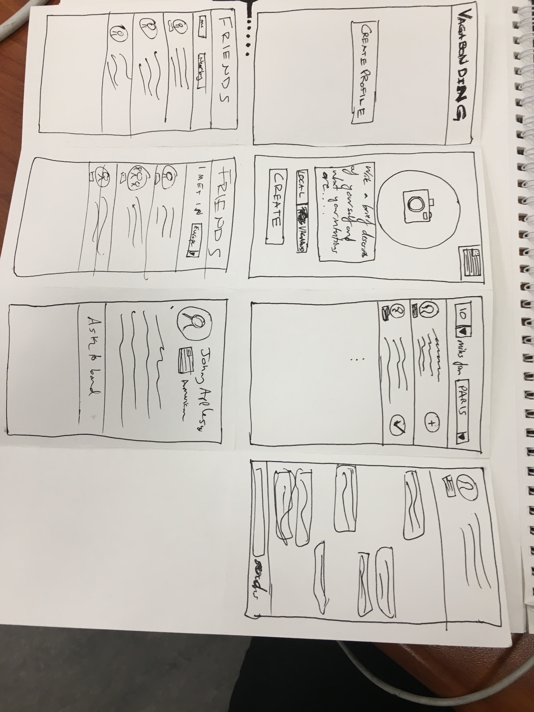

Users seemed to navigate themsleves pretty well through the app. Need to move the
flag selection because it was hard to find. Also the local/visiter tabs are not intuitive.
"Ask to bond" was also a little confusing so I might change that. Also definitely need
to include a back button.